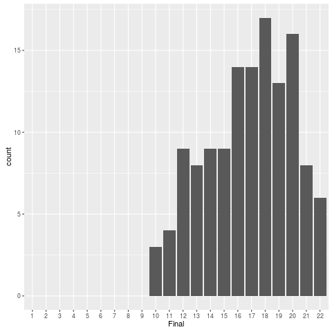

Using R in Student Assessment
Table of Contents
Introduction
In this lesson, we will apply some of what you learned in “the basics (part 1 and 2)” to analyze assessments for an undergraduate course in statistics.
Make sure you have the following add-on packages installed: dplyr, tidyr, ggplot2.
Topics we will be covering:
- data input/output
- reshaping data
- relational data, including different types of joins
- data summaries
- visualization using
ggplot2
Background reading:
NOTE: The full script containing all reproducible code can be downloaded here
Why I chose these data
Data analytic skills are best learned by analyzing one’s own data. Marking assignments, combining scores into final assessments, and evaluating participation in a course are all activities with which staff routinely perform, and staff have access to a variety of data related to their own teaching activities.
Calculating grades
We often think of analyzing data in terms of generating graphs and computing statistics, but in reality, this is a fairly small part of what counts as data analysis. When dealing with large datasets you will probably spend a proportionally larger amount of time just preparing the data than you will spend visualizing it or computing statistics.
Most people have some kind of idiosyncratic and ad-hoc system in place for data preparation; however, these systems are often error-prone, inefficient, and not reproducible. It pays to learn how to do things in a more systematic way: it will make you a much more efficient and confident data analyst.
In this lesson, we will be working with anonymized grades from my undergraduate statistics course at the University of Glasgow.
Our tasks
- Grading
- Homework: Students were given 8 homework assignments. The policy for calculating their final homework grade was to drop the lowest score, then take the average of the remaining scores.
- Final grade: The single overall homework score should be combined with the exam score, with the weightings of 60% Exam, 40% Homework.
The data archive
Download the file marking_data.zip and unzip it somewhere where you can find it. Then, make sure you set your working directory to the marking_data folder. If you’ve forgotten how to do this, see here.
You can check if everything worked correctly by typing list.files() in your console window. You should see as a result:
list.files()
character(0)
Here is a description of the files.
exam.csv |
Assessment scores on homework (40%) and exam (60%) |
homework.csv |
Assessment scores on all 8 homework assignments |
scale.csv |
Marking scale translating letter mark to 1-22 point scale |
users.csv |
(anonymized) list of all students; names, IDs are fake |
Loading it
- We will be working with the
read.csv()function to read in the data from these files. For better performance, including not having to constantly remember to setstringsAsFactors = FALSE, check out thereadrpackage, which contains the alternative functionread_csv()(note the underscore instead of the dot betweenreadandcsv).
First, lets look at the list of users.
users <- read.csv("users.csv", stringsAsFactors = FALSE)
glimpse(users)
Error in glimpse(users) : object 'users' not found
Two mysteries.
First, there are far more users (433) than there were students enrolled in this class (130); the students in the class are a subset of all of the users in this table. For whatever reason, it was not possible to download only the subset of users enrolled in the course, so we’ll have to deal with the superset. This turns out not to be a big problem because of the way we’ll be joining the tables together, so we’ll leave it for now.
Second, some of the the student ID numbers (in the field ID.number) are weird. Student IDs are 7 digit numbers, sometimes with leading zeroes (“0012345” is a valid student ID number). Annoyingly, read.csv() has guessed that ID.number should be stored as an integer, which causes the leading zeroes to be dropped. How can we overrule this behavior? If you look at the documentation for read.csv() (type ?read.csv()), you will see an argument colClasses. We will use this argument to force R to load in the ID number as a character.
Calculating homework grades
hwk <- read.csv("homework.csv", stringsAsFactors = FALSE,
colClasses = c("character", "integer",
"character", "integer"))
Now glimpse it:
glimpse(hwk)
Error in glimpse(hwk) : object 'hwk' not found
Our task is to calculate a single composite homework grade by dropping each student’s lowest score and then calculating a mean. This would be laborious to do by hand, as there are 130 students in the class, not to mention error-prone. So the first thing we’ll do is write a script that does that for us. We can break the task into the following steps:
- Create a table with each student’s top 7 grades
- Calculate mean grades by subject
Before we do this, let’s just check the integrity of our data: let’s make sure we have 8 scores for each of our 130 students.
## first, let's make sure we have all 8 scores for all students
hcounts <- hwk %>% count(SID)
head(hcounts)
hcounts %>% select(n) %>% distinct()
Error in eval(lhs, parent, parent) : object 'hwk' not found Error in head(hcounts) : object 'hcounts' not found Error in eval(lhs, parent, parent) : object 'hcounts' not found
OK, we’re satisfied that we have a full set of scores for students. Now let’s do step 1: find the top 7 grades for each student. We will use the group_by() and slice() functions from the R package dplyr.
We’re going to do something slightly more complicated that we’ve done in the past; in particular, we are going to use the windowed functionality of dplyr. (For background, see the dplyr vignette ’introduction’, particularly the section on “Grouped operations”.) What does this mean?
Well, normally when you use an function such as mean() or arrange(), it performs the operation (e.g., calculate a summary statistic, re-arrange the rows) over the entire table. For instance, summarize(hwk, lowest = min(points)) will give us the lowest value of points over all 1048 observations in the table.
But what we want is the top 7 scores for each student, so what we need to do is to apply arrange() to each student’s data individually, and then we will slice() off the top 7. This is called a “windowed” operation because each student’s data is an individual “window” over which the arrange() operation is applied. Let’s try out slice(), arrange() and group_by() to get a feeling for them before we try to use them together.
## unwindowed versions
slice(hwk, 1:10) # first 10 rows
hwk %>% arrange(points) ## ascending order
hwk %>% arrange(desc(points))
hwk %>% arrange(points) %>% slice(1:10) ## lowest 10 scores
hwk %>% arrange(desc(points)) %>% slice(1:10) ## top 10 scores
hwk %>% slice(c(11, 13, 1000)) ## pull out by row number
## the first score listed for each student
hwk %>% group_by(SID) %>% slice(1)
hwk %>% group_by(SID) %>% slice(8) # last one listed
## sort by SID, desc(points)
hwk %>% arrange(SID, desc(points))
hwk %>% group_by(SID) %>% arrange(desc(points))
## extract each student's "top 7" scores
top_7 <- hwk %>%
group_by(SID) %>%
arrange(desc(points)) %>%
slice(1:7) %>% ungroup()
Error in eval(lhs, parent, parent) : object 'hwk' not found
glimpse(top_7)
Error in glimpse(top_7) : object 'top_7' not found
We have 917 observations, and 917 / 7 = 131, so we can be confident that the code worked as intended.
The final ungroup() operation is not strictly necessary, but it represents good practice. When you need to perform a windowed operation, it’s a good idea to get rid of the groupings after you are finished. Also, for technical reasons, when you do a windowed slice() on a table, you should regroup the data by SID or you will get an error message that your data frame is “corrupt.”
OK, we’re ready to calculate a mean grade for each student.
top_7 %>% summarize(mpoints = mean(points)) ## wrong!
Error in eval(lhs, parent, parent) : object 'top_7' not found
Whoops, we need to re-group the data by SID.
hwk_grades <- top_7 %>%
group_by(SID) %>%
summarize(mpoints = mean(points))
Error in eval(lhs, parent, parent) : object 'top_7' not found
Note something odd here: there are 131 grades, but only 130 students enrolled in the course. We’ll revisit this mystery later.
We’re getting close; hwk_grades is almost what we want. Actually it would be great if we could assign letter marks (A1–A5, B1–B3, … G2) based on mpoints because that’s what we need to report. How can we do this?
Well, we first need to round off mpoints and make it an integer type instead of a real number (type numeric). Then we can join it with a marking scale, which can be loaded in from the file scale.csv..
mscale <- read.csv("scale.csv", stringsAsFactors = FALSE)
| x |
|---|
| org_babel_R_eoe |
hwk_grades2 <- hwk_grades %>%
mutate(points = as.integer(round(mpoints)))
## note: round() uses "go to the even number" rule for
## dealing with .5 values
Error in eval(lhs, parent, parent) : object 'hwk_grades' not found
OK, now we’ve made it an integer; all we need to do is combine it with the marking scale. If we were to do this by hand, we might, for example, open hwk_grades2 in a spreadsheet, create a new column called mark, and then go row-by-row through the spreadsheet, manually looking up the value in the marking scale corresponding to points and typing it into your new column. Not only would this be a colossal waste of time, but it would also be error prone, especially toward the end as your attentional resources are drained by this mind-numbing task. Wouldn’t it be nice to have a robot assistant who could do this for you?
You can accomplish this in R with just one simple line of code. Note that what we need to do, in essence, is join together information across two separate tables: hwk_grades2 and mscale. We can join information using the inner_join() function in dplyr. What we will do is called a mutating join because we will essentially create a new column in hwk_grades2 containing the mark corresponding to points. The code is below: try it out and see what happens.
hwk_marks <- inner_join(hwk_grades2, mscale, "points")
When you perform a join, you need to name the two tables you want to join, and state how you wish to combine them by specifying a key. In the current case, we want to use “points” as a key. In effect, inner_join() does automatically what you would have done if you did this task by hand: it looks at each row of hwk_grades2 and finds the row in mscale that matches on points, and then concatenates all of the columns from mscale onto hwk_grades2. That’s really all it takes to accomplish this! You can learn more about joins by reading this chapter on Relational Data of Grolemund and Wickham’s book on R For Data Science.
At this point, you might want to save your results to a CSV file.
write.csv(hwk_marks, "homework_mark.csv", row.names = FALSE)
Reshaping the homework table
OK, one more thing before we finish with the homework grades. Let’s say you need to share all the homework grades for each student with another member of staff. A table in long format with over 1,000 rows would not be very useful for this person, and they may not know how to reshape it. So let’s reshape the hwk table into wide format so there is one line per student. To do this, we’ll use the spread() function from the tidyr add on package.
It’s easy…
hwk_wide <- hwk %>% select(-mark) %>%
spread(HWID, points)
head(hwk_wide)
Error in head(hwk_wide) : object 'hwk_wide' not found
Combining homework and exam scores
In this section, we will combine the homework score that we just calculated with the exam score. This is just an easy inner_join(). Then, we’ll look at distributions, so in addition to dplyr, make sure you’ve loaded in the add on package ggplot2.
We will need to load in the exam scores. Because the file includes student IDs with leading zeroes, we should remember to set colClasses so that the IDs aren’t loaded in as integers.
exam <- read.csv("exam.csv", stringsAsFactors = FALSE,
colClasses = c("character", "character", "integer"))
glimpse(exam)
Error in glimpse(exam) : object 'exam' not found
OK, let’s join this with the hwk_marks table.
grades <- inner_join(hwk_marks, exam, "SID")
glimpse(grades)
Error in inner_join(hwk_marks, exam, "SID") : object 'hwk_marks' not found Error in glimpse(grades) : object 'grades' not found
Note what happened here: both tables have fields named points and mark, and so in the resulting table, inner_join() created points.x for the field from hwk_marks and points.y for the one from exam. We should rename them to something more useful.
grades <- inner_join(hwk_marks, exam, "SID") %>%
select(SID, Homework = points.x, Exam = points.y)
glimpse(grades)
Error in inner_join(hwk_marks, exam, "SID") : object 'hwk_marks' not found Error in glimpse(grades) : object 'grades' not found
OK, next thing to do: apply the weighting (60% Exam, 40% Homework). We’ll create a new column, Final, which will have the resulting composite grade. To add a new column, we use the dplyr function mutate(). As above, we’ll need to round it off and convert it to an integer while we’re at it.
grades <- inner_join(hwk_marks, exam, "SID") %>%
select(SID, Homework = points.x, Exam = points.y) %>%
mutate(Final = as.integer(round(.6 * Exam + .4 * Homework)))
glimpse(grades)
Error in inner_join(hwk_marks, exam, "SID") : object 'hwk_marks' not found Error in glimpse(grades) : object 'grades' not found
Last thing: as above, we want a letter grade, so we’ll join grades to
the marking scale, keyed by Final. Note, however, that the key we want to use has different names in the two tables: it’s called Final in grades, but points in scale. So we have to write the join argument in a way that recognizes this.
grades <- inner_join(hwk_marks, exam, "SID") %>%
select(SID, Homework = points.x, Exam = points.y) %>%
mutate(Final = as.integer(round(.6 * Exam + .4 * Homework))) %>%
inner_join(mscale, c(Final = "points"))
Error in inner_join(hwk_marks, exam, "SID") : object 'hwk_marks' not found
glimpse(grades)
Error in glimpse(grades) : object 'grades' not found
OK, we’re done! Let’s look at the grade distributions with ggplot2. In case you need a refresher, look here.
ggplot(grades, aes(Final)) + geom_bar() +
scale_x_discrete(limits = 1:22)

Finally, let’s resolve the mystery of the extra student. We have 131 homework scores but only 130 exam scores. When we did the inner join between hwk_marks and exam, that one student was dropped because there was not corresponding info in both tables. Which student was this? In other words, which row is in hwk_marks that does not appear in grades?
anti_join(hwk_marks, exam, "SID")
Error in anti_join(hwk_marks, exam, "SID") : object 'hwk_marks' not found
And who is this student with ID ’4243474’?
filter(users, ID.number == "4243474")
Error in filter(users, ID.number == "4243474") : object 'users' not found
AHA, Fiyaad Fhvn was a student who failed to turn up to the exam, but with good cause.
We’re done with grades; we can save grades to a csv file and send it off to be uploaded into the campus database so that grades can be reported.
Extra practice to do on your own
There is another, less straightforward way to accomplish the homework grading. See if you can calculate composite scores in this other way:
a. Create a table containing the minimum score for each student using windowed filtering (
group_by()+filter()). Keep in mind that individual students might have multiple assignment with the same minimum score, so (a windowed)slice()might come in handy.b. Get rid of those scores from the
hwkdata frame (ananti_join()might be helpful here!)c. Calculate summary statistics for each subject.
- It would be cool if the bars in the grade distribution plotted above could be color-coded based on the mark class A–G (e.g., green for A, blue for B, red for C, and so on). Look at the documentation for the
substr()function (type?substr) to see how to pull out the first character of themarkfield; usemutate()to create a new variable. Alter the aesthetics of the call toggplot()so that the bars are color coded by mark class.